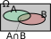

Même si des calculs concernant des risques ou des jeux de hasard ont été faits depuis l'antiquité, on date le début de la théorie des probabilités de la correspondance entre Blaise Pascal et Pierre de Fermat (1654) à propos du «problèmes des paris».
Notion de modèle
On lance un dé cubique et on note le numéro de la face supérieure.
Cette expérience est une expérience aléatoire dont les issues (résultats possibles) sont 1, 2, 3, 4, 5, 6 :
Issue
1
2
3
4
5
6
Probabilité
\( \frac{1}{6} \)
\( \frac{1}{6} \)
\( \frac{1}{6} \)
\( \frac{1}{6} \)
\( \frac{1}{6} \)
\( \frac{1}{6} \)
Une réalisation (que l'on appelle «épreuve») de cette expérience (réalité ou simulation), doit forcément aboutir à l'une de ses issues ; on ne sait pas laquelle exactement.
L'ensemble des issues est \( \Omega = \left\{1{,}\, 2{,}\, 3{,}\, 4{,}\, 5{,}\, 6 \right\} \).
Définir une probabilité, pour une expérience aléatoire, consiste à :
attribuer à chacune des issues \(x_i\) un nombre \(p_i\) positif ou nul, appelé probabilité de \(x_i\), de sorte que l'on ait \( p_1+\cdots+p_n=1=100\% \)
Le dé suivant est truqué :
Issue
1
2
3
4
5
6
Probabilité
\( \frac{1}{10} \)
\( \frac{1}{10} \)
\( \frac{1}{10} \)
\( \frac{1}{10} \)
\( \frac{1}{10} \)
\( \ldots \)
Calculer \(p(6)\), la probabilité d'obtenir un six.
Il y a 86% d'élèves droitiers dans ce lycée.
Quelle est la probabilité de tomber au hasard sur un élève qui ne le soit pas ?
Notation somme : Une somme telle que \(p_1+\cdots+p_n\) se note, de manière condensée, à l'aide du symbole sigma (\(\Sigma\)) : \( \displaystyle\sum_{i=1}^n p_i\)
Calculer \( A=\displaystyle\sum_{i=1}^7 i\) et \( B=\displaystyle\sum_{i=1}^4 i^2\)
(PISA) développer une intuition d'une probabilité :
Un géologue a affirmé :
«Au cours des 20 prochaines années, la probabilité que se produise un tremblement de terre à Springfield est de 2 sur 3»
Parmi les propositions suivantes, laquelle exprime le mieux ce que veut dire le géologue ?
Puisque \(\frac{2}{3}\times20\approx13{,}3\), un tremblement de terre aura lieu à Springfield dans 13 à 14 ans.
Puisque \(\frac{2}{3}>\frac{1}{2}\), on est sûr qu'il y aura un tremblement de terre à Springfield dans les 20 ans.
La probabilité d'avoir un tremblement de terre dans cette ville est plus forte que celle de ne pas en avoir.
On ne peut rien dire, car personne n'est sûr du moment où un tremblement de terre se produit.
Construire un modèle
Dans la grande majorité des cas, on utilise l'une de ces deux façons de déterminer les probabilités \(p_i\) associées aux issues \(x_i\) :
Étude statistique - observer les fréquences
On lance un dé truqué un grand nombre de fois (10 000, par exemple) et on note le résultat dans le tableau suivant :
Issue
1
2
3
4
5
6
Probabilité
\( 0{,}125 \)
\( 0{,}125 \)
\( 0{,}125 \)
\( 0{,}125 \)
\( 0{,}2 \)
\( 0{,}3 \)
On décide alors que l'on a expérimenté un nombre suffisant de lancers pour que les futurs lancers de ce dé respectent les mêmes fréquences que celles de cette expérience. Cette «décision» établit un modèle probabiliste : on peut remplacer le mot «Fréquence» (qui est du domaine de la statistique) dans le tableau par le mot «probabilité».
Par le choix de l'équiprobabilité.
Le lancer d'une pièce de monnaie bien équilibrée :
Issue
pile
face
Probabilité
0,5
0,5
Dans une situation d'équiprobabilité, Toutes les issues possèdent la même probabilité.
Étude statistique ou équiprobabilité ?
Le choix de l'équiprobabilité se fait lorsqu'il est suggéré dans l'énoncé (pièce équilibrée, tirage dans une urne au hasard).
Si on est dans une situation où les probabilités de chaque issue n'ont aucune raison d'être les mêmes, on doit mener une étude statistique.
Étude statistique ou équiprobabilité ? Le préciser.
On lance un dé bien bien équilibré.
On choisit au hasard une consonne dans l'alphabet.
Probabilité qu'un foyer français ait 2 enfants.
Tomber sur le zéro sur une roulette de casino (numérotée de 0 à 36).
Que M. Dupont, 40 ans, que l'on ne connaît pas, attrape la grippe l'hiver prochain ?
Qu'une tartine tombe du côté de la confiture ?
Prévoir
Probabilité d'un événement
On lance un dé cubique et l'on considère l'événement \(A\) : «obtenir au moins 5».
issues favorables à \(A\) (qui réalisent \(A\) ) sont 5 et 6 ; on note \(A=\left\{5;6\right\}\).
Pour le dé truqué (utilisé précédemment), si \(P(5)=0{,}2\) et \(P(6)=0{,}3\) alors \(P(A)=0{,}2+0{,}3=0{,}5\) .
Pour un dé équilibré (situation d'équiprobabilité) : \(P(5)=P(6)=\frac{1}{6}\) alors \(P(A)=\frac{1}{6}+\frac{1}{6}=\frac{1}{3}\)
Un événement \(A\) est un sous-ensemble (aussi appelée partie) de l'univers \(\Omega\) (on note \(A\subset\Omega\), on dit «\(A\) inclus dans \(\Omega\)»).
La probabilité \(P(A)\) est la somme des probabilités des issues favorables à \(A\).
Pour tout événement \(A\), on a : \(0\leqslant P(A)\leqslant 1\)
On a \(P(\Omega)=1\).
L'événement \(B\) : «obtenir un \(7\) sur un dé est impossible : \(P(B)=0\). On identifie à l'ensemble vide noté \(\emptyset\) tout événement impossible (\(B=\emptyset\)).
Dans une situation d'équiprobabilité, la probabilité d'un événement \(A\) est :
\(P(A)=\frac{\textrm{nombre d'issues favorales à }A}{\textrm{nombre d'issues possibles}}\)
Opérations sur les événements
Si \(A\) et \(B\) sont deux événements,
On note \(\overline{A}\) l'événement complémentaire de \(A\) (toutes les issues qui ne réalisent pas \(A\).)
L'événement \(A\cap B\) est l'ensemble des issues qui réalisent \(A\) et \(B\) (simultanément).
L'événement \(A\cup B\) est l'ensemble des issues qui réalisent \(A\) ou \(B\) (au moins l'un des deux).
On lance un dé cubique et équilibré, et on note les événements suivants :
Reproduire le tableau précédent dans le cas d'un dé octaèdrique (8 faces).
Soit \(A\) et \(B\) deux événements : Événement complémentaire : \(P(\overline{A})=1-P(A)\)

Union quelconque : \(P(A\cup B)=P(A)+P(B)-P(A\cap B)\)Union disjointe :
Si \(P(A\cap B)=0\), alors \(P(A\cup B)=P(A)+P(B)\)
Lorsqu'on sait que \(A\) et \(B\) ne peuvent être réalisés simultanément ; \(A\) et \(B\) sont dits incompatibles ; dans ce cas on a \(P(A\cap B)=0\).
\(A\) et \(B\) sont deux événements quelconques ; exprimer \(P(A\cap B)\) en fonction de \(P(A)\), \(P(B)\) et \(P(A\cup B)\).
\(P(A)=0{,}7\) et \(P(B)=0{,}6\).
Montrer que \(A\) et \(B\) ne peuvent pas être incompatibles.
En dégager une condition sur les probabilités de \(A\) et \(B\) impliquant que ces deux événements soient incompatibles.
Chaque ligne du tableau représente une situation différente. Compléter le tableau.
\(A\)
\(B\)
\(\overline{A}\)
\(\overline{B}\)
\(A \cup B\)
\(A \cap B \)
0,2
0,5
0,1
0,6
0,6
0
0,7
0,7
0,5
0,8
0,2
0,4
Si \(A\) et \(B\) sont deux événements quelconques, on a toujours :
\[P(A\cap B)\leqslant \begin{array}{c}P(A)\\P(B)\\ \end{array}\leqslant P(A\cup B)\]
Lois de Morgan :
\[\overline{A\cap B}=\overline{A}\cup\overline{B}~~\textrm{et}~~\overline{A\cup B}=\overline{A}\cap\overline{B}\]
Utiliser les lois de Morgan pour exprimer \(\overline{(A\cap B)\cup C}\) en fonction des complémentaires de ces trois événements.